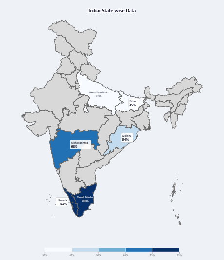
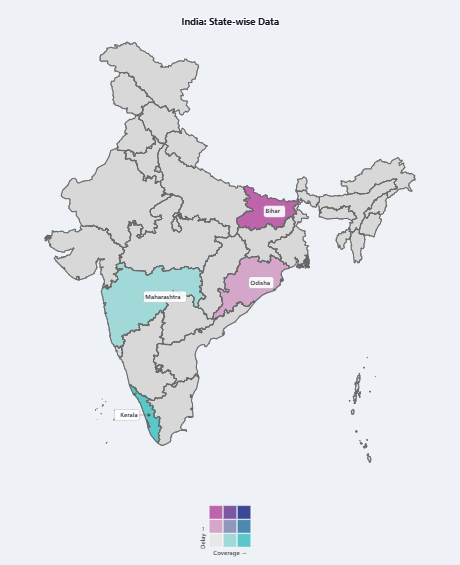
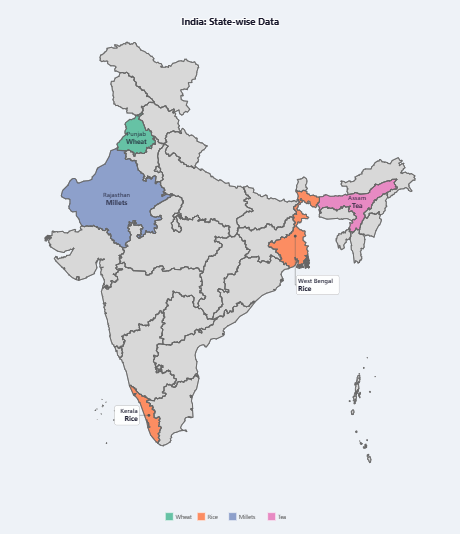
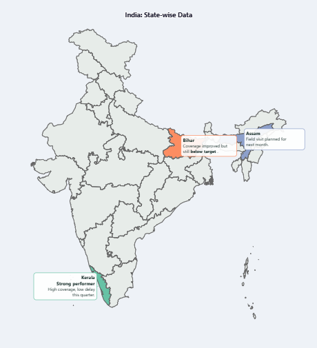

The four modes
Every mode shares the same map, the same Data/Style/Labels/Export workflow, and the same export options — they only differ in what kind of data goes on the map. Pick the one that matches your data, not the other way round.
Switch modes any time using the colored buttons at the top — you'll always land back on the Data tab, since that's where you'd want to check/re-enter data for the new mode.
Entering data
Every mode's Data tab offers the same three ways to get state data in:
- Table — type directly into the grid. This is also where you edit after importing.
- Paste CSV — paste two (or more) columns copied from Excel/Sheets, then click Parse & Load. A header row is detected automatically and skipped.
- Upload CSV — upload a file with any number of columns; you then pick which column is the state name and which column(s) hold your data. Useful when your source file has extra columns you don't need.
State name matching
DeshDash recognises full state/UT names (Maharashtra), common 2-letter codes (MH, WB, TN...), and several old/alternate spellings (Orissa→Odisha, Uttaranchal→Uttarakhand, etc.). The green/red dot next to each row tells you if that row matched a real state. Whatever you actually type is what shows on the map — e.g. type "Kerala" and it shows "Kerala"; type "Keralam" and it shows "Keralam". Matching still works either way.
One row per state — aggregate first
This trips people up most often when pasting raw/disaggregated data straight from a source file — one row per district, per scheme, per beneficiary, per transaction — instead of a state-level summary:
| Wrong — raw rows, state repeated | Right — aggregated first |
|---|---|
Bihar,42Bihar,58Bihar,35 | Bihar,135 |
Pasted as-is, the left side keeps only Bihar,35 — the map understates Bihar by two-thirds of its real total, with no error message. The fix: total (or average — whichever is meaningful for your metric) every state's rows in Excel/Sheets first, e.g. a pivot table or =SUMIF(state_col, "Bihar", value_col), so each state appears exactly once before you paste or upload.
Two ideas that apply in every mode
Map labels vs. the hover tooltip
What's permanently drawn on the map (state name, values, notes) is controlled separately from what you see on hover. Hovering any state always shows its full detail in a tooltip, no matter how much you've hidden from the permanent map — turn things off in Labels tab → What to Show to declutter a busy map without ever losing information.
Everything is draggable
The legend, every label box, the takeaway box, and every annotation note can be dragged directly on the map to reposition it. You can also hide an individual state's label entirely (Labels tab → Adjust Label Position → set that state to "Hidden") if one particular label is in the way — its data is still there on hover.
Collapsing the control panel
The ☰ button at the top of the screen hides the entire left control column so the map fills the whole window — handy when presenting or screenshotting. Click it again to bring the panel back; it remembers whether it was collapsed the next time you open DeshDash.
Saving and exporting
The Export tab has two different things — don't mix them up:
- Save/Load Project (.json) — saves everything: your data, every setting, every dragged position, for every mode. Use this to come back and keep editing later.
- Download SVG / PNG / Copy Image / Interactive HTML / Print — produces the finished map for use elsewhere (a report, a slide, a webpage). These are one-way — you can't re-import them to keep editing.
Map width/height (also in the Export tab) apply to whichever mode you're currently in — click Generate/Refresh Map after changing them.
Core capabilities
# heading, - bullet, **bold**, *italic*, and __underline__ mini-markdown, an expandable editor for long notes, and optional Group-based coloring.☰ button at the top of the screen for a full-width view — useful when presenting or capturing a clean screenshot.What's unique to each mode
| Univariate | Sequential or diverging color scales, continuous or stepped, with full manual range/midpoint control. |
| Bivariate | A true two-variable color grid (3×3 to 5×5) instead of two separate maps, with named/independently-formatted X and Y values. |
| Categorical | Direct text categories — no binning. The categories covering the most states keep their own color (adjustable cap, 3–8, default 7); the rest automatically share one "Other" swatch — both the cap and the Other color are yours to set — so the legend never becomes unreadable. |
| Annotations | Free-text notes per state with three color modes (distinct / single / by Group), fully independent of any numeric scale. |
Worked example — data in
| State | Value |
|---|---|
| Kerala | 82 |
| Tamil Nadu | 76 |
| Maharashtra | 68 |
| Odisha | 54 |
| Bihar | 45 |
| Uttar Pradesh | 38 |
Typed straight into the Table, or pasted as Kerala,82 / Tamil Nadu,76 ... into Paste CSV. Suffix set to %, 0 decimals.
What you get — map out

Data tab
| State Data table | State/UT + Value columns, with a green/red dot marking whether each row's state matched. + Row adds a blank row; All States pre-fills all 33 states/UTs so you just type values over a complete list; Clear empties the table; Undo reverts the last change; Reset to Sample reloads the built-in demo dataset. |
| Paste CSV | Paste State,Value pairs (comma or tab separated — works pasted straight from Excel), then Parse & Load. Header row auto-detected and skipped. Numbers with grouping commas like 1,00,000 parse fine. |
| Upload CSV | Upload a .csv/.txt file, then choose the State/UT column and Value column from the dropdowns (auto-detected and pre-selected). If the file has several numeric columns, switch Value column anytime to redraw with a different metric — no re-upload needed. |
| Value Format | Prefix (e.g. ₹) and Suffix (e.g. Cr, %) text; Decimal places (Auto/0/1/2/3); Thousands separator checkbox. Applies everywhere the value is shown — map label, legend, tooltip. |
Style tab
| Color Scale Type | Sequential — one direction light→dark, for "more is more" data. Diverging — splits at a midpoint into two directions, for data that's meaningfully above/below a benchmark. |
| Sequential / Diverging Scheme | Click a swatch in the grid to pick a built-in D3 color scheme; the grid shown depends on which scale type is selected. |
| Reverse scale | Flips which end of the scheme is light vs. dark. |
| Custom gradient (Low→High) | Two color pickers to define your own sequential gradient, used when Custom is selected in the scheme grid. |
| Custom diverging (Low→Mid→High) | Three color pickers for a custom diverging gradient. |
| Scale Range — Auto min/max | On (default): scale sizes itself to your data automatically. Off: set Min/Max manually — useful for comparing several maps on the same scale, or to stop one outlier from stretching the whole range. When off + Diverging, a Midpoint value slider appears. |
| Steps | Continuous smooth gradient, or a fixed number of discrete color bands (4–8) — discrete bands are often easier to read at a glance in print. |
| Other Colors | No-data fill for states with missing values; Border color/width between states; Background/ocean color; Background opacity (SVG export only — PNG export is always solid). |
| Legend | Show legend toggle; Position (Center/Left/Right — sets the default drop point); Width as % of map. Draggable on the map regardless of the position setting. |
| Map Takeaway | Show takeaway box toggle reveals a text box (supports # heading, - bullet, **bold**, *italic*, __underline__), a corner Position + fine dx/dy offset, Text size/color, and Box fill/border color. One map-wide callout, separate from per-state labels — also draggable. |
Labels tab
| Map Labels | Title, Subtitle, Title placement (Overlay inside the map, or Above the map with reserved space + a Top padding slider), Source, Note — the text framing around the map. |
| What to Show | Show state name, Show value, Abbreviate name — what's drawn permanently on the map. The hover tooltip always shows full detail regardless of these. |
| External Labels | For small/crowded states that get an outside box + line: Show leader lines, Line color/thickness, Label background box toggle with its own Box fill, Fill opacity, Border color/width, Corner radius; Name size, Value size. |
| Inline Labels | For larger states with text drawn directly on them: Name size, Value size, Auto color (contrast) toggle (picks readable text color per state automatically; turning it off reveals manual Name color/Value color pickers), Opacity. |
| Adjust Label Position | Pick a State, then set its Label style (Auto / Always external / Always inline / Hidden — hidden states still show on hover), nudge with dx/dy (± buttons or type exact px), or toggle No leader line (box only). Or skip the dropdown and just drag the label on the map — dx/dy update to match. |
The Export tab (Save/Load Project, map dimensions, downloads) is identical across all four modes — see Getting Started.
Worked example — data in
| State | Value X (Coverage %) | Value Y (Delay, days) |
|---|---|---|
| Kerala | 88 | 4 |
| Maharashtra | 71 | 9 |
| Odisha | 55 | 15 |
| Bihar | 42 | 21 |
Pasted as 3-column CSV: Kerala,88,4 ... into Paste CSV. Value X named "Coverage" (suffix %), Value Y named "Delay" (suffix days).
What you get — map out

How to read the grid
Each state's color comes from a small grid, not a single scale. One axis (X) is your first variable, the other (Y) is your second. A state lands in a grid cell based on where it ranks on both — so the "high-high" corner and "low-low" corner are the two most different-looking colors, and a state that's high on one but low on the other lands in a third, distinct corner.
Data tab
| State Data table | State/UT + Value X + Value Y columns (the table gains the second column automatically in this mode). Same +Row/All States/Clear/Undo/Reset to Sample buttons as Univariate. If you arrive here with no Y data yet, sample Y numbers auto-fill so the map isn't blank — replace them with your own. |
| Paste CSV | 3-column paste: State,X,Y. Header row auto-detected. |
| Upload CSV | Pick State/UT column, Value column (X — first variable), and Value column (Y — second variable) from three dropdowns. |
| Value Format | Two independent named blocks since X and Y are usually different units: Value X (name field, e.g. "Literacy", plus its own Prefix/Suffix/Decimal places) and Value Y (e.g. "GSDP Growth", same set of fields). Label separator controls how X and Y join when both are shown on the map: New line (stacked), /, ,, or |. Thousands separator checkbox is shared. |
Style tab
| Bivariate Grid & Colors | Grid size (3×3/4×4/5×5 — how many ranked buckets each variable is split into; more cells means finer distinctions but a busier legend). Palette preset: Stevens Pink-Blue (classic, well-tested bivariate scheme), Teal-Rose, Blue-Orange, or Custom. Four corner pickers — Low X/Low Y (base), High X/Low Y, Low X/High Y, High X/High Y (both high) — a preset fills these; edit any of them afterward to go Custom. Reset to preset default restores the selected preset's original corners. |
| Other Colors / Legend / Map Takeaway | Same controls as Univariate (see there). Color Scale Type and Scale Range sections are hidden in this mode — Bivariate uses its own grid instead of a single scale. |
Labels tab
| Map Labels | Same Title/Subtitle/Source/Note controls as Univariate. |
| What to Show | Show Value X / Show Value Y — two independent toggles (each labeled with your X/Y name), both off by default since two value lines per state gets cluttered fast; state color + name carry the pattern, hover for exact numbers. Abbreviate name also available. |
| External Labels / Inline Labels / Adjust Label Position | Same mechanics as Univariate — see there. |
Worked example — data in
| State | Category |
|---|---|
| Punjab | Wheat |
| West Bengal | Rice |
| Kerala | Rice |
| Rajasthan | Millets |
| Assam | Tea |
Typed as free text into the Category column, or pasted as Punjab,Wheat ... into Paste CSV — no number parsing involved.
What you get — map out

Data tab
| State Data table | State/UT + a free-text Category column (not numeric) — type the category name directly for each state. Same +Row/All States/Clear/Undo/Reset to Sample buttons as Univariate. If you switch into this mode with leftover numbers in the column, generic sample category text auto-fills so nothing breaks — replace it with your real categories. |
| Paste CSV | State,Category text pairs. Header-row detection checks whether the first column matches a real state name (not whether the value column is numeric, since category text never is). |
| Upload CSV | Pick State/UT column and Category column. |
| Value Format | Hidden in this mode — prefix/suffix/decimals/thousands-separator don't apply to text. |
Style tab
| Categorical Colors | Palette (Set2 / Dark2 / Paired / Pastel2 — ColorBrewer qualitative sets chosen so adjacent colors stay visually distinct). |
| Distinct-color cap | Distinct colors before grouping into "Other" — adjustable from 3 up to 8 (default 7; 8 is the ceiling because each palette only has 8 distinguishable hues). The categories covering the most states get their own color, in that order — not whichever appeared first in your data — so the cap always keeps the categories that matter most to the map. |
| "Other" swatch | Categories beyond the cap are grouped into one gray "Other" swatch, with its own color picker here — useful if a palette's own last color sits too close to the default Other gray to tell apart. The legend's Other (N) label counts states, not how many category names got merged. |
| Other Colors / Legend / Map Takeaway | Same controls as Univariate — the Legend section additionally gets a Legend layout option here (Categorical only): Horizontal (default, one row), Vertical (one column), or Grid (pick 2/3/4 columns). Horizontal is compact but can run wide with several categories or long names; Vertical/Grid stack entries instead, and any label over ~14 characters wraps to a second line automatically. Color Scale Type and Scale Range are hidden — there's no numeric scale to configure. |
Labels tab
| What to Show | Same as Univariate, except the "Show value" toggle is relabeled Show category. |
| Map Labels / External Labels / Inline Labels / Adjust Label Position | Identical mechanics to Univariate — the state simply displays its category text instead of a number. |
Worked example — data in
| State | Group | Note |
|---|---|---|
| Kerala | On track | # Strong performer\nHigh coverage, low delay this quarter. |
| Bihar | Needs attention | Coverage improved but still **below target**. |
| Assam | Needs attention | Field visit planned for next month. |
Typed into the Table (or pasted as Kerala,Note text with \n for line breaks). # makes a bold heading line, **below target** renders bold.
What you get — map out

Data tab
| Annotations Data table | Replaces "State Data" entirely in this mode. Columns: State/UT, Group (optional — used by the Categorical-by-Group color mode below), Note (supports **bold**, *italic*, __underline__, # heading, - bullet). Click the small ⤢ button on any row to edit its note in a larger popup editor. + Row, Clear, Reset to Sample buttons (no Undo in this table). |
| Paste CSV | State,Note text pairs. Type a literal \n inside a cell for a line break within a note. Header row auto-detected. Group is not set by import — add it in the Table view afterward if needed. |
| Upload CSV | Pick State/UT column and Note text column. |
Style tab
| Annotation Fill — Color mode | Distinct per state (default): every annotated state gets its own palette color. Single color: every annotated state shares one flat color you pick — use when the color itself carries no meaning. Categorical (by Group): colors follow the Group column, with a Show group legend on map toggle and the same Legend layout choice (Horizontal/Vertical/Grid) as Categorical mode — Horizontal here auto-wraps to a new row instead of running off the map. |
| Palette | Set2/Dark2/Paired/Pastel2 (ColorBrewer qualitative), used in Distinct and Categorical modes. |
| No-data fill | Fill color for states with no note. |
| Legend | Hidden in this mode — the "Show group legend on map" toggle above replaces it when using Categorical-by-Group coloring. |
| Other Colors / Map Takeaway | Same controls as every other mode. |
Labels tab
| Annotation Text Style | Show note text on map (turn off for a clean colored map that still shows full text on hover), Show state name heading, State name size, Note text size, Line spacing, Wrap width (characters per line — keep it tight so long notes don't overflow their box), Text color, Text matches state color checkbox, Text opacity. |
| Annotation Leader Lines | Show leader lines, Line color, Line thickness. |
| Annotation Label Box | Label background box toggle, Box fill color, Fill opacity, Border color (fallback, used only where per-state border-matches-color is off), Border width, Padding, Corner radius. |
| Adjust Annotation Position & Color | Pick a State, nudge with dx/dy or drag its note box directly on the map (overlapping boxes auto-shift apart — vertically, then sideways). No leader line (box only); Hide this state's note on map (still shows on hover); State fill (override) color + Reset button; Label border matches state color checkbox, with a Custom border color picker when unchecked. |
| Hidden in this mode | What to Show / External Labels / Inline Labels / Adjust Label Position (the numeric-mode versions) don't apply here — replaced entirely by the four sections above. |
# Heading text at the start of a line for a bold heading, - Bullet text at the start of a line for a bullet point, **bold** for inline bold, *italic* for inline italic, __underline__ for inline underline, \n in pasted/uploaded text for a line break.Working with data
- Start from Reset to Sample before pasting real data — it shows you the exact column shape each mode expects, so your paste lands correctly the first time.
- Always check the match-info dots after import. A red/unmatched dot means that state silently has no data on the map — it's easy to miss if you only glance at the map, not the table.
- Watch for duplicate spellings resolving to one state (e.g. "Kerala" and "Keralam" in two rows) — only the last one entered is kept; the map won't show an error, it'll just look like one row's data went missing.
- Pick the mode to match your data's shape, not the chart you had in mind — one number → Univariate, two numbers → Bivariate, a label → Categorical, prose → Annotations. Forcing the wrong mode (e.g. cramming two numbers into Categorical text) throws away what that mode is built for.
Choosing scales and colors
- Use Diverging only when there's a real midpoint that matters — a benchmark, a target, a zero line. If "more is simply more," Sequential is easier for readers to interpret at a glance.
- Turn off Auto min/max when comparing several maps side by side, and set the same manual Min/Max on all of them — otherwise identical colors on two maps can mean different values.
- Keep the Bivariate grid at 3×3 unless you specifically need finer distinctions — 4×4 and 5×5 pack more nuance in but the legend gets harder to read at a glance, especially in a printed report.
- In Categorical, the cap keeps your most common categories distinct automatically — rarer ones join "Other" on their own, ranked by how many states share each category, not by which one you typed first. If you want more (or fewer) than the default 7 kept distinct, adjust the cap directly in the Style tab instead of manually merging categories.
Decluttering and presenting
- Turn off on-map value/note display for presentation-ready maps (What to Show, or Show note text on map) and let the hover tooltip carry the detail — cleaner for screenshots and slides.
- But remember static exports (PNG/SVG/Print) can't show hover tooltips. If you've hidden values or notes from the map for cleanliness, make sure the number/text you need is actually visible in whatever export you plan to share — use Interactive HTML export instead if the recipient needs to hover for detail in a standalone file.
- Drag first, fine-tune with dx/dy second. Dragging a label or note roughly into place is faster than guessing pixel offsets — use the dx/dy fields afterward only for small precision nudges.
- For Annotations, keep notes short and rely on Wrap width rather than writing long paragraphs — a note that overflows its box looks worse than a short, clear one.
Protecting your work
- Save a Project file before experimenting with a setting you're unsure about, and again once you're happy with the result — Undo only covers the data table, not styling changes.
- Use consistent Prefix/Suffix/decimal formatting across a series of maps destined for the same report, so all the figures read the same way to your audience.
Troubleshooting / FAQ
- A state isn't matching (red dot / greyed out on the map)
- Check the spelling against the state's actual name, or use a recognized 2-letter code. Old names like "Orissa" and "Uttaranchal" work too, but genuinely unusual spellings or typos won't auto-match — fix the text in the State/UT column.
- Two rows show the same state twice, or my totals look too low
- Two rows resolving to the same state — whether two spellings (e.g. "Kerala" and "Keralam") or genuine duplicate/raw rows (e.g. district-level data not yet aggregated) — only keep the last one; the rest are silently dropped, not summed. DeshDash now flags this automatically: check the amber warning under the State Data table after loading data. See "One row per state — aggregate first" above for the fix.
- The map looks too cluttered
- Turn off name/value/note display for individual states (see "Two ideas that apply in every mode" under Getting Started), or reduce what's shown by default in the Labels tab — you never lose the data, it's always on hover.
- The legend is covering part of the map
- Drag it. Every legend in every mode can be repositioned by clicking and dragging it directly.
- Bivariate colors don't look right after changing the grid size
- Click Reset to preset default in Style tab → Bivariate Grid & Colors, or re-pick a palette preset — hand-edited corner colors stay as "Custom" until you do.
- I switched modes and my data changed
- Univariate, Bivariate, and Categorical share one underlying data table (since they're all "one row per state"). Switching between them adapts that table's format automatically, but if you had unrelated data in there from a different mode, re-check it after switching. Annotations has its own separate table, untouched by the others.
Export formats explained
| Format | Best for |
|---|---|
| SVG | Further editing in Illustrator/Inkscape; infinitely scalable, small file size. |
| PNG (2×) | Dropping straight into a report or slide deck; high-resolution raster. |
| Copy Image to Clipboard | Pasting directly into Word/PowerPoint/chat without saving a file first. |
| Interactive HTML | Sharing a standalone file where hovering states still shows the tooltip, viewable in any browser, no app needed. |
| Print / Save as PDF | Using your browser's own print dialog for a quick PDF. |
What's new in this build
This unified DeshDash combines what used to be two separate tools (DeshDash for choropleths, LabelDash for free-text notes) into one app with four switchable modes, plus two entirely new modes (Bivariate and Categorical) that didn't exist before. Your data, once entered, carries between modes wherever it makes sense — you're not starting over each time you switch.